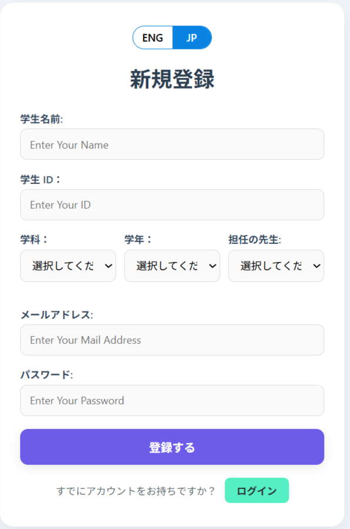
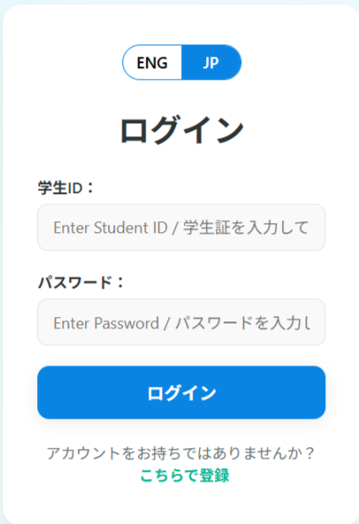
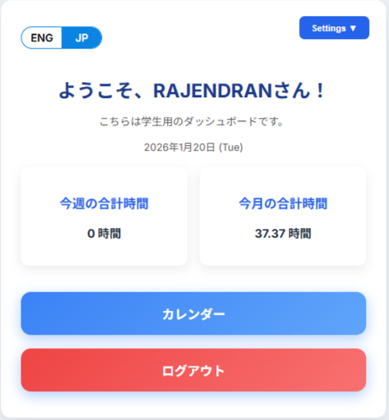
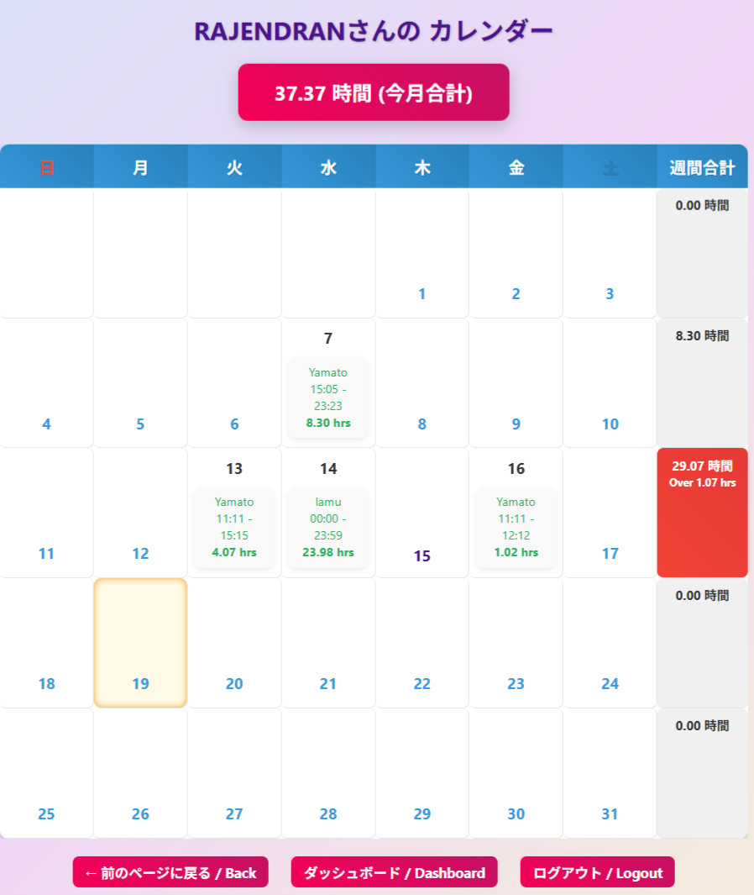
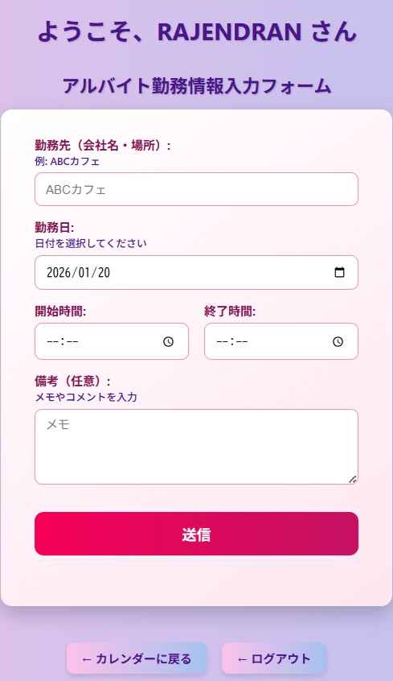
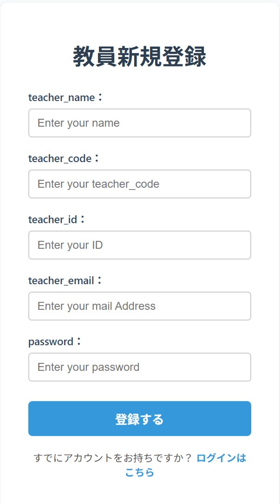
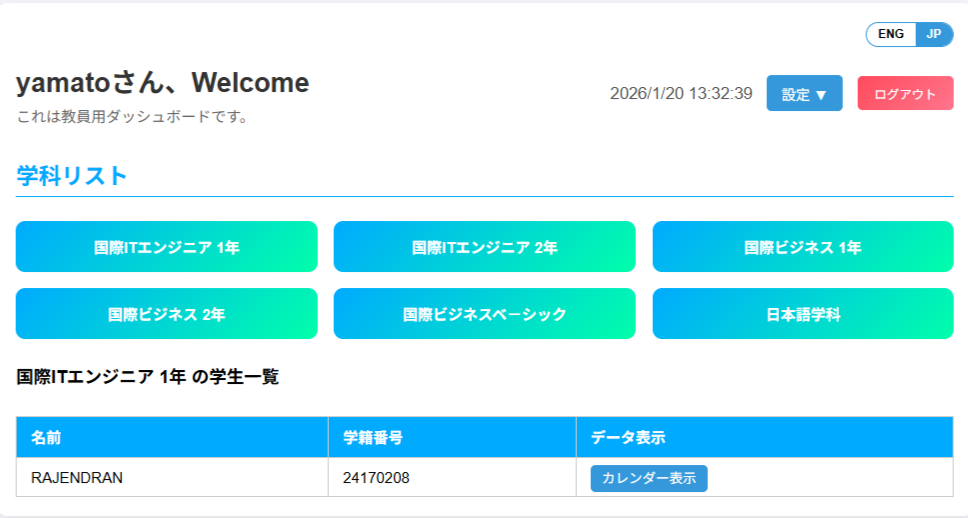
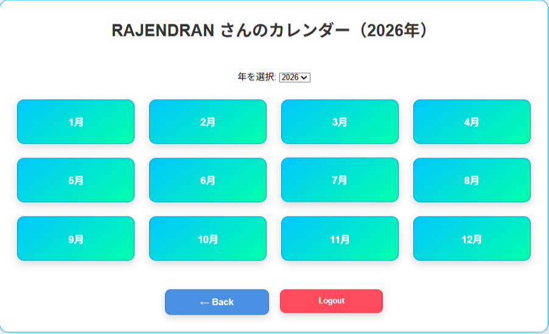
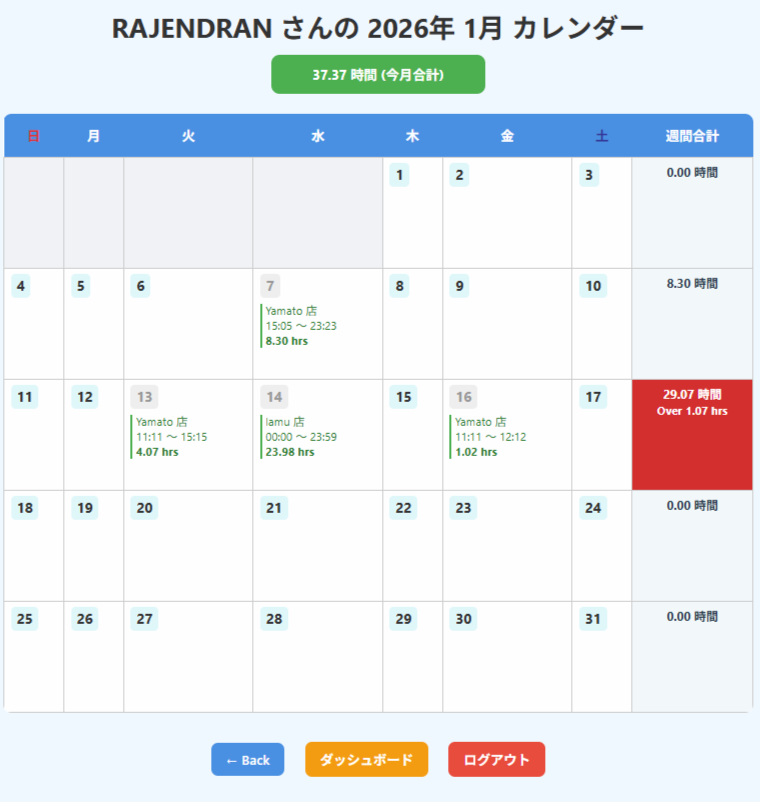

インド・タミルナードゥ出身のWeb開発愛好家です。現在、日本で学生としてWeb開発を勉強しています。 I am a web development enthusiast from Tamil Nadu, India. Currently, I am a student studying web development in Japan.
以前、Cognizant Technology Solutions India Pvt LtdでIT関連の経験を積みました。Web開発に触れることで興味を持ち、現在はHTML、CSS、JavaScript、PHPを使ってフルスタック開発を独学で学んでいます。
(Previously worked at Cognizant Technology Solutions India Pvt Ltd gaining IT experience. Interested in web development and currently self-learning full-stack development with HTML, CSS, JavaScript, and PHP.)
( Currently under preparation with future updates planned.
We will notify you here as soon as it's ready, so please check back! )
サービス / Services
現在、学生としてWeb開発に取り組んでおり、実践的なスキルを磨いています。
Currently studying web development as a student, improving practical skills.
独学でプロジェクトを作成しながら、以下の分野を中心に学習しています:
Self-learning by creating projects, focusing on the following areas:
HTML、CSS、JavaScriptを使ったフロントエンド開発 / Frontend development using HTML, CSS, JavaScript
PHPを使ったバックエンドの基礎 / Basic backend using PHP
モバイル対応デザイン（レスポンシブWebデザイン） / Mobile-friendly responsive web design
実用的なポートフォリオの作成と公開 / Creating and publishing practical portfolios
これらのスキルを実際のプロジェクトに応用しながら、常に成長を目指しています。
Applying these skills to real projects while continuously aiming for growth.
お問い合わせ / Contact
私のページをご覧いただきありがとうございます。 Thank you for visiting my page.
名前 / Name: チンナサミ・ラジェンドラン
メール / Email: Rajendran2190@gmail.com
ご質問等がありましたら、お気軽にメールでご連絡ください。 If you have any questions, please feel free to contact me by email.
留学生アルバイト管理システム/ Attendance Management System for International Students
日本では学生が1週間に28時間までしか働けない規則があります。このルールを守るために、自分の労働時間をスマホで簡単に記録できるウェブアプリを作成しました。
In Japan, students are allowed to work only up to 28 hours per week. To comply with this rule, I developed a web app to easily record working hours on a smartphone.
① ユーザー登録（新規学生） / User Registration (New Student)
学生はまず自分の情報（氏名、メール、パスワードなど）を入力して登録します。登録後は、個別アカウントでログインし、労働記録を安全に保存できます。
Students first enter their information (name, email, password, etc.) to register. After registration, they can log in with their account and safely save their work records.

② ログイン画面 / Login Screen
登録が完了した学生は、メールアドレスとパスワードでログインできます。ログイン後は自分専用のページで労働時間を記録・確認できます。
Registered students can log in using their email and password. After login, they can record and check their working hours on their personal page.

③ 学生ダッシュボード / Student Dashboard
ログイン後、学生は自分専用のダッシュボードに移動します。ここでは、今週の労働時間の合計、過去の記録、警告メッセージなどを確認できます。また、データ入力ページやカレンダー表示ページへのリンクもあります。
After logging in, students move to their dashboard where they can check total hours worked this week, past records, warnings, and links to data entry and calendar pages.

④ カレンダー表示 / Calendar View
このページでは、現在の年の各月ごとの労働記録を確認できます。学生は月を選択して、その月に働いた日と時間の合計を確認できます。28時間を超えた週には警告が表示されます。
This page shows monthly work records for the current year. Students can select a month to see days worked and total hours. Warnings appear if weekly hours exceed 28.

⑤ 労働時間入力フォーム / Work Hours Entry Form
学生は日々のバイト代わり、働いた日付、開始時間、終了時間を選択して入力します。入力されたデータは即座に計算され、週の合計時間に反映されます。これにより、28時間を超えないよう自己管理がしやすくなります。
Students enter their daily work details by selecting the date, start time, end time. The entered data is immediately calculated and reflected in the weekly total, making it easier to self-manage and stay within the 28-hour limit.

--- 学生セクション終了 / Student Portion Ends ---
教員セクション / Teacher Portion
⑥ 教師登録 / Teacher Registration
管理者や教師は、専用ページから自分の情報（氏名、メール、パスワード）を登録します。登録後は管理者として学生の労働記録を確認できます。
Administrators and teachers register their info (name, email, password) on a dedicated page. After registration, they can monitor students’ work records.

⑥ 教師ログイン / Teacher Login
登録済みの教師はメールアドレスとパスワードでログインできます。ログイン後はダッシュボードに移動し、登録された学生の労働時間を週ごとに確認可能です。
Registered teachers can log in with email and password. After login, they access a dashboard showing students’ weekly work hours.
⑦ 教師ダッシュボード / Teacher Dashboard
教師はこのダッシュボードを通じて、学生ごとの労働記録を確認したり、週ごとに28時間を超えていないかを監視することができます。必要に応じてCSV形式でエクスポートも可能です。
Teachers use this dashboard to check individual student records and monitor if weekly hours exceed 28. Data export to CSV is also available.

⑧ 月別・学生別データの詳細閲覧 / Monthly Student Data Details
教師は特定の学生を選択し、月ごとの労働記録を詳細に確認できます。学生の顔写真とともに、各月の勤務時間、勤務先、そして週合計時間が自動計算されて表示されます。月を切り替えることで、過去の就労状況も遡ってチェックでき、28時間超過の有無を正確に把握できます。
Teachers can select a specific student to view detailed monthly work records alongside the student's photo. It displays work locations, daily hours, and automatic weekly totals for each month. By switching months, teachers can track past employment history and accurately monitor compliance with the 28-hour limit.

⑨ 超過勤務の監視とアドバイス機能 / Overwork Monitoring & Advice
週28時間の法定労働時間を超えた学生に対し、システムが自動的にアラートを表示します。教師はダッシュボードから該当する学生を特定し、ルールを遵守するように個別にメッセージやアドバイスを送ることができます。これにより、学生のビザトラブルを未然に防ぐ指導が可能です。
The system automatically displays alerts for students who exceed the legal work limit of 28 hours per week. Teachers can identify these students via the dashboard and provide individual guidance or warnings to ensure compliance with regulations, preventing potential visa issues.

⑧ 開発中 / Under Development
このページは現在開発中です。完成次第、最新情報をここに追加する予定です。もうしばらくお待ちください。
This page is currently under development. We plan to add updates here once completed. Please wait a little longer.
📌 主な機能（主要機能の紹介） / Main Features
このウェブアプリは学生が簡単に労働時間を記録し、日本の規則（週28時間以内）を守るために役立ちます。
This web app helps students easily record work hours and comply with Japanese regulations (within 28 hours/week).
ユーザー登録・ログイン機能 / User registration and login
学生の労働時間管理・表示 / Student work hour management and display
教師の管理用ダッシュボード / Teacher’s admin dashboard
カレンダー表示での労働時間確認 / Work hour confirmation via calendar view